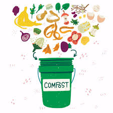
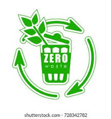

Sustainable Living
-

How to compost food scraps
-
 Beginner’s guide to composting
Beginner’s guide to composting
-
 Sustainable living tips
Sustainable living tips
-
 Tips for reducing home energy use
Tips for reducing home energy use
-

How to create a zero-waste kit
-
 Eco-friendly bathroom swaps
Eco-friendly bathroom swaps
-
 Water conservation techniques
Water conservation techniques
-
 Daily habits to lower your carbon footprint
Daily habits to lower your carbon footprint
Green Shopping
- How to avoid plastics
- Reusable goods guide
- How to recycle clothing
- How to read eco-labels when buying
- Local vs. imported goods: what’s greener?
- Best reusable bags for every occasion
- Are bamboo products really sustainable?
- How to support ethical brands